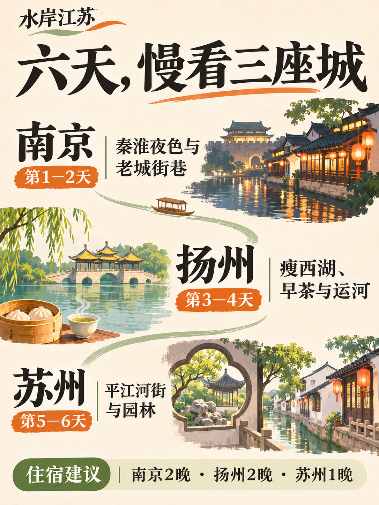
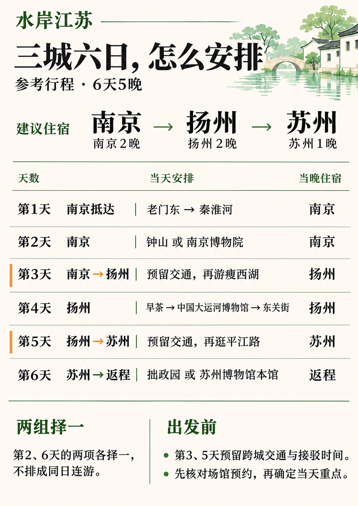
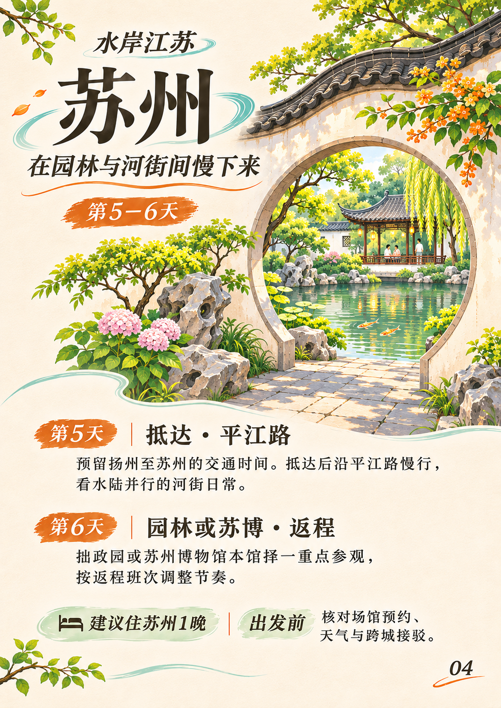

内容与设计修订
水岸江苏
先把行程讲清楚，再决定画面
海报用三个两日章节表达体验差异；线路页展开六天、两次换城、两组择一和五晚住宿。本轮先验证两张关键页，未替换此前整本手册。





此前版本 · 装饰偏重的对照
这一版被反馈过于华丽、缺少内容与设计，保留原图作为修订依据。
一条水线，串起三城
海报先建立记忆点，手册再展开旅行节奏。文字、插画与排版均由整页生图完成。
此页只用于浏览原图，未叠加文字或重新排版作品。手册为固定栅格页面，连续正文可点击原图或在 PDF 中放大阅读。
从秦淮夜色，走到园林晨光
打开此前四页 PDF · 点击任一页面查看原图


同一页的构图修订
初稿沿用了其他城市页的上下结构。修订后保留文案、字体气质与插画材料，将日程移到左侧连续阅读，园林在右侧形成纵深。

